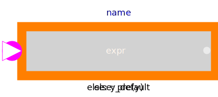
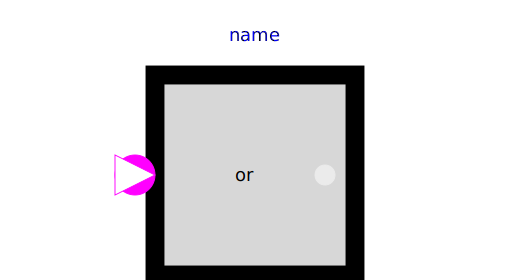
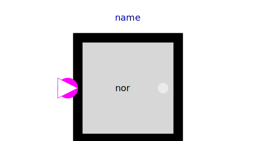
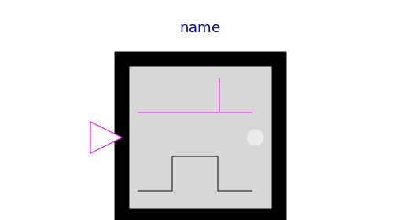
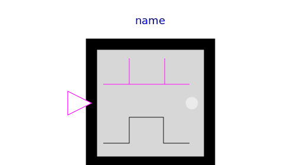

This package contains basic mathematical operations on Boolean signals.
Package MathBoolean is a new design that shall replace in the future the Logical package. The new features are:
| Name | Description |
|---|---|
|  MultiSwitch | Set Boolean expression that is associated with the first active input signal |
| Logical 'and': y = u[1] and u[2] and ... and u[nu] | |
|  Or | Logical 'or': y = u[1] or u[2] or ... or u[nu] |
| Logical 'xor': y = oneTrue(u) (y is true, if exactly one element of u is true, otherwise it is false) | |
| Logical 'nand': y = not ( u[1] and u[2] and ... and u[nu] ) | |
|  Nor | Logical 'nor': y = not ( u[1] or u[2] or ... or u[nu] ) |
| Logical 'not': y = not u | |
| Output y is true, if the input u has a rising edge, otherwise it is false (y = edge(u)) | |
|  FallingEdge | Output y is true, if the input u has a falling edge, otherwise it is false (y = edge(not u)) |
|  ChangingEdge | Output y is true, if the input u has either a rising or a falling edge and otherwise it is false (y=change(u)) |
| Delay a rising edge of the input, but do not delay a falling edge. |